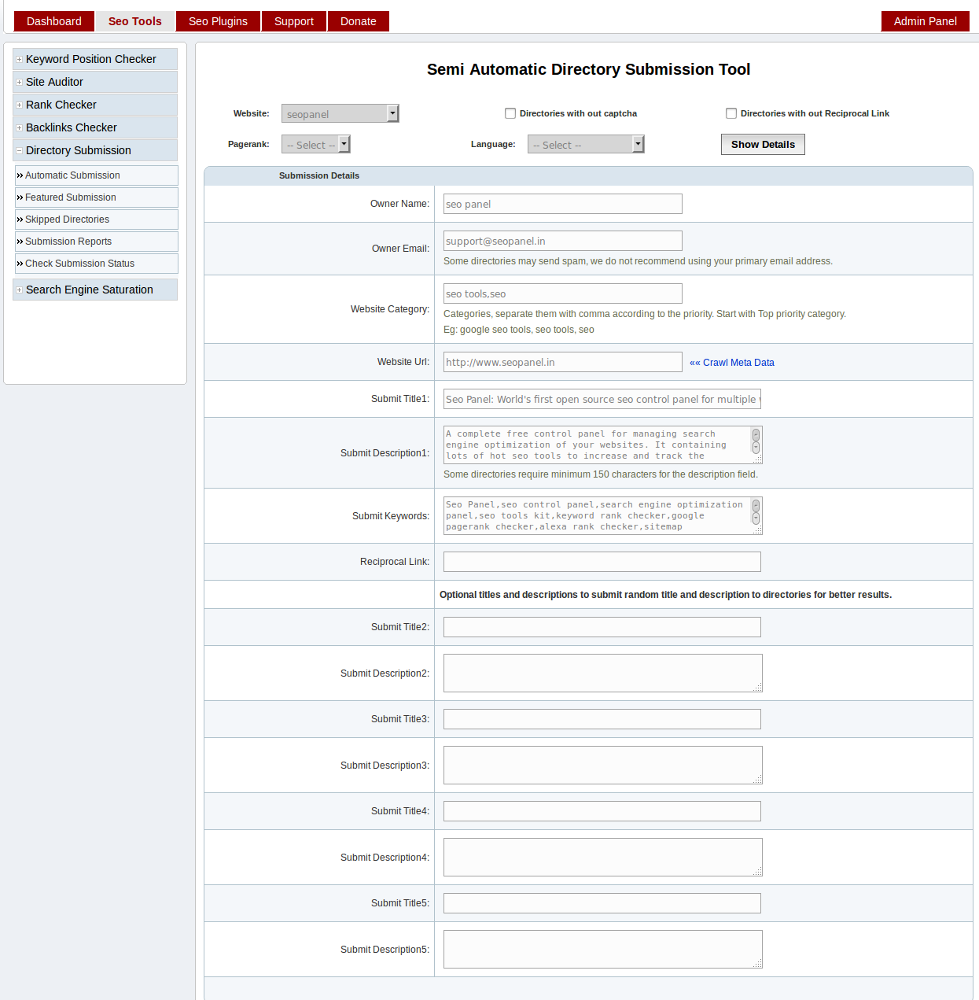
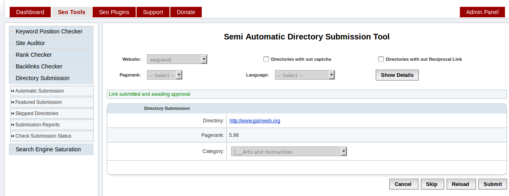
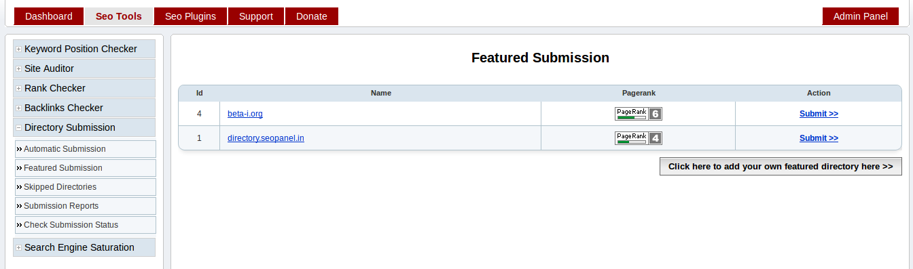

Directory Submission¶
Directory Submission Tool¶
This section will help you to submit your website to internet directories. That will help you to increase backlinks to your website.
Go to Seo Tools => Directory Submission => Automatic Submission

Enter details in filter according to your requirements
- Website - The website needs to be submitted to the directories
- Directories with out captcha - Check this, if you want to submit to directories with out captcha only
- Directories with out Reciprocal Link - Check this, if you want to submit to directories with out reciprocal link only
- Pagerank - Select to submit to directories with particular pagerank
- Language - Select to submit to directories with particular language
Click on ‘Show Details’, you will be redirected to folowing page
Enter details in form according to above screen shot
Owner Name - The name of the owner of website
Owner Email - The email address of the owner of website
Website Category - Enter categories, separated with comma according to the priority. Start with Top priority category. Seo panel will auto select submission category according to this value.
Website Url - The url of the website needs to be submitted
Click on `Crawl Meta Data` link to get the page title and meta tags. You can also edit this details later.
Submit Title1 - The title of the submission entry
Submit Description1 - The description of the submission entry
Submit Keywords - The keyword of the submission entry
Reciprocal Link: - The reciprocal page link, where you have added submission directory website link. This entry required when directory submission requires reciprocal link.
Submit Title(2-5) - The optional title of the submission entry. If we add it, each submission will take random entry from this page title list
Submit Description(2-5) - The optional description of the submission entry. If we add it, each submission will take random entry from this description list
Click on ‘Proceed’, you will be redirected to folowing page

Enter details in form according to above screen shot
Directory - Show the directory link where wbesite id submitted
Pagerank - The pagerank of directory
Category - The category to which website is submitted. You can change it according to the requirements.
Reciprocal Link - The reciprocal page link, where you have added submission directory website link. You can change it according to the requirements.
Enter the code shown - Enter the captacha text shown in the image. If image is not clear, please click on Reload button to reload the captcha again.
Submit Options
- Cancel - To cancel the submission
- Skip - To skip the current directory. It wil load next directory, with out submission to current directory.
- Reload - To relead the current directory submission form Eg: If captcha image is not clear, reload to get new captcha image
- Submit - Submit to the current directory shown in the form
Click on ‘Submit’, you will be redirected to following page
You can see message like above screen shot.
‘Link submitted and awaiting for approval’
Submission Reports¶
This section will help you to track the directory submission done earlier.
Go to Seo Tools => Directory Submission => Submission Reports
Enter details in search filter according to your requirements
- Name - Enter name of the directory to add in search filter
- Website - Select website to add in search filter
- Status - Select the status of directory submission to add in search filter
It will show the directory submission reports with details like directory name, date of submission, page rank, status etc

Check Status of directory submission
Select ‘Check Status’ from right most action select box. You can also delete the submission from reports.
Skipped Directories¶
This section will help you to track the directory submission skipped earlier.
Go to Seo Tools => Directory Submission => Skipped Directories

This report will show the directories skipped during submission. Select particular website to get skipped directories of it.
Click on ‘Add back to directory list’ to add it again for directory subsmission.
Featured Submission¶
This section will help you to submit your website to featured directories. These submission will be approved with in 24 hours and also it will show as featured websites.
Go to Seo Tools => Directory Submission => Featured Submission
Click on ‘Submit >>’ to submit your website to these directories.
Check Submission Status¶
This section will help you to check status of all directory submissions of a website.
Go to Seo Tools => Directory Submission => Check Submission Status

Select website and click on ‘Proceed’ to check status of all directory submission of a website
Directory Manager¶
This section will help you manage directories in your seo panel.
Go to Admin Panel => Directory Manager => Directory Manager

Enter required search filters to get the list of directories
Click on ‘Check Status’ to find the current status of directory. You can also manually change the status of directory by click on the status link ‘Active’ and ‘Inactive’
Check Directory Status¶
This section will help you check status of all directories in your seo panel.
Go to Admin Panel => Directory Manager => Check Directory

Select ‘Status’ of directories needs to be checked.
Click on ‘Proceed’ to check the current status of all directories according to the search filter.